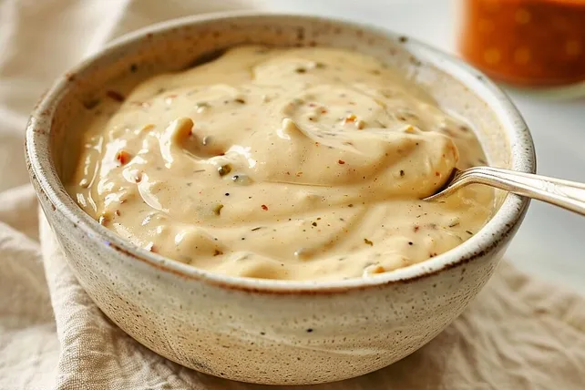

Beste Burgersauce

Die Burgersauce ist perfekt für jede Art von Burger. Mit einer leichten Note von Schärfe und passt die Sauce zu Fleisch, Fisch und Fleischalternativen
Zutaten
- Sesam
- Rote Chili
- Jalapenos
- Gewürzgurken
- Gewürzgurkenwasser
- Majonaise
- Senf
Step-by-Step
- Sesam in einer heißen Pfanne rösten.
- Die rote Chili, Gewürzgurke und Jalapenos klein schneiden und in ein Behälter legen.
- Beliebig viel Majonaise zu dem klein geschnittenen geben und vermischen.
- Je nach Menge, mindestens 1 EL Gewürzgurkenwasser dazugeben (Vorsicht, nicht zu viel, da es sonst zu flüssig wird) und 1 TL Senf.
- Zum Schluss den gerösteten Sesam unterrühren und etwas stehen lassen.
Zurück zur Homepage